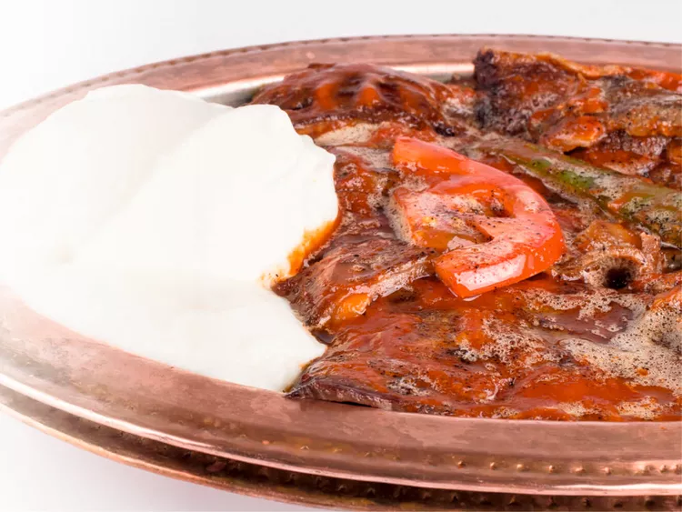

Iskender Kebab

Description
Ingredients:
- 4 pita bread rounds
- 1 tablespoon olive oil
- 4 skinless, boneless chicken breast halves - chopped
- 2 medium onions, chopped
- 1 clove garlic, minced
- 1 (10.75 ounce) can tomato paste
- ground cumin to taste
- salt to taste
- ground black pepper to taste
- ½ cup butter, melted
- 1 cup Greek yogurt
- ¼ cup chopped fresh parsley
Steps:
- Preheat the oven to 350 degrees F (175 degrees C). Arrange pita bread on a baking sheet.
- Bake pitas in the preheated oven until lightly toasted; cut into bite-sized pieces and keep warm.
- Heat oil in a skillet over medium heat. Stir in chicken, onion, and garlic; cook until chicken is cooked through and juices run clear, about 10 minutes. Mix in tomato purée; season with cumin, salt, and pepper. Continue to cook and stir for a few minutes.
- Layer the lasagna according to the recipe instructions
- Arrange toasted pita pieces in a serving dish. Drizzle with melted butter and top with chicken mixture. Garnish with yogurt and parsley to serve.
- Let the lasagna rest before serving